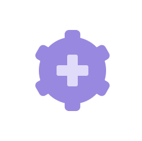

거버넌스
위기관리
전사 리스크 관리
LG에너지솔루션은 지속가능한 경영체계 구축을 위해 리스크 관리 체계를 수립하고 전문 조직을 구성하여 전사적 리스크를 사전에 식별하여 예방/점검하고 있습니다. 전사위기관리체계를 통해 품질, 안전, 공급망, 사업, 재무, 사회·환경 분야의 리스크를 분석하고, 대응 활동을 진행하고 있습니다.
리스크 대응 시에는 재무적 효과만이 아닌, 안전과 환경 등 지속가능성 요소를 반드시 고려해 위기 영향을 검토하여 리스크 등급을 평가합니다.
임직원, 지역사회, 소비자의 안전을 최우선 가치로 여기며 이를 책임지는 경영책임자인 CRO (Chief Risk Officer)를 선임하고, 선행적인 리스크 관리를 위해 전문 조직을 운영하고 있으며, 특히 품질, 환경안전, 컴플라이언스를 핵심 리스크로 선정해 품질관리 시스템 강화, 사업장 증대에 따른 환경안전 개선 활동 실시, 공급망 안정화를 위한 협력관계 구축 등을 진행하고 있습니다.
LG에너지솔루션은 이러한 관리체계를 지속적으로 발전시켜 사업 운영에서 발생할 수 있는 다양한 리스크를 최소화해 나갈 계획입니다.
리스크 관리 프로세스
-

리스크 식별
LG에너지솔루션은 위기로 발전할 수 있는 잠재 리스크에 대한 민감도를 높이고 리스크 식별 및 저감 활동을 위해 전사 차원의 리스크 관리체계를 운영합니다.
또한, 전 임직원들이 을 숙지하고 업무에 기본으로 삼고 있습니다.-
리스크 도출
전사 중장기 전략 및 기능별로 업무 프로세스를 분석하고 인터뷰 등을 통해 다양한 관점에서 리스크를 도출합니다. -
리스크 점검
위기 발생을 방지하고 위기 발생 시의 피해 완화를 위해 중장기 전략과 사업 계획을 수립할 때 사업 환경 변화를 집중적으로 점검하고 있습니다.
-
-

리스크 대응
LG에너지솔루션은 위기상황의 확대를 방지하고 신속하게 정상화하기 위해 전사 위기관리 규정을 수립하고, 위기 발생시 대응 매뉴얼에 따라 전사 위기대응체계를 가동합니다.
핵심적인 위기가 발생하는 경우, 각 부서는 본사 리스크관리위원회와 신속히 공유하고 핵심 리스크 대응 시 고객과 지역사회, 구성원의 생명과 안전을 첫 번째 판단 기준으로 하고 있습니다. -

사후관리
위기가 종료되면 리스크 관리 전담 조직이 주관해 재발 방지 대책 이행 과정을 모니터링하고 결과를 검증합니다. 리스크 관리 전담 조직은 위기 상황 변화 및 피해 영향을 목록화하고, 비상대책위원회의 의사결정 과정을 포함한 시나리오를 개발하며 모의 훈련을 실시해 위기대응 능력을 향상시키고 있습니다. 더불어 위기대응 매뉴얼과 시스템을 개선하고, 개선 사항을 수평적으로 전개함으로써 유사 위기 재발을 방지하고 있습니다.
-

리스크 관리체계 강화
LG에너지솔루션은 2021년 12월 본사와 국내 생산공장을 대상으로 비즈니스연속성 관리 시스템(BCMS, ISO 22301) 국제 인증을 취득했습니다.
향후 글로벌 사업장 추가 인증 추진을 통해 사업장별 실질적 리스크 관리 체계를 구축하고 리스크 대응 업무 고도화 및 체계화를 모색해 나갈 예정입니다.